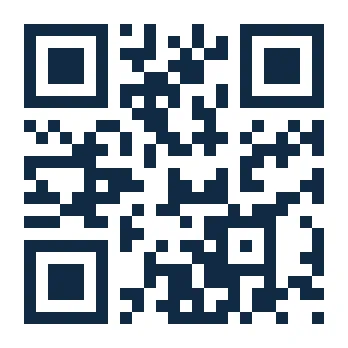

ចូលរួមសហគមន៍ PISA Math & AI
kh"
រួមគ្នារៀនសូត្រ ចែករំលែក និងកសាងធនធាននេះ
សូមគោរពអញ្ជើញលោកគ្រូ អ្នកគ្រូ ចូលរួមសហគមន៍ តេលេក្រាម (Telegram) ដើម្បីពិភាក្សា និងចែក រំលែក បទពិសោធបង្រៀនគណិតវិទ្យា។ ប្រសិនបើលោកគ្រូ អ្នកគ្រូជួបសំណួរដែលពិបាកដោះស្រាយរកឃើញ វិធីដោះស្រាយគួរឱ្យចាប់អារម្មណ៍ ឬមានគំនិតយកស្ថានភាពក្នុងជីវភាពប្រចាំថ្ងៃនៅកម្ពុជាមកបង្កើតជាលំហាត់ សូមចែករំលែកជាមួយសហគមន៍យើង។ បទពិសោធពីថ្នាក់រៀន និងមតិយោបល់របស់ លោកគ្រូ អ្នកគ្រូ នឹងជួយឱ្យយើងខ្ញុំដឹងថា សៀវភៅនេះគួរកែលម្អ និងបំពេញបន្ថែមត្រង់ណាខ្លះ។
ធនធានអប់រំមានតម្លៃ នៅពេលអាចជួយដល់ការបង្រៀន និងការរៀនបានពិតប្រាកដ។ ការយកទៅប្រើ ក្នុងថ្នាក់រៀន និងការផ្លាស់ប្តូរបទពិសោធរវាងគ្រូ គឺជាមូលដ្ឋានសម្រាប់កែលម្អឯកសារទាំងនេះឱ្យកាន់តែ ប្រសើរ។ យើងខ្ញុំសូមអរគុណចំពោះមតិយោបល់ និងការរួមចំណែករបស់លោកគ្រូ អ្នកគ្រូ ក្នុងការអភិវឌ្ឍ សៀវភៅនេះ និងការត្រៀមសិស្សកម្ពុជាសម្រាប់ PISA ២០២៩។

@pisamathAI
សូមស្កេន QR កូដ ដើម្បីចូលរួមពិភាក្សា និងរួមចំណែក!